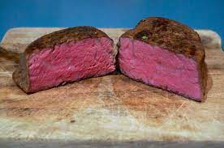

Sous Vide Steak

The perfect way to cook a Juicy steak.
A perfect tender steak that you won't need a knife to cut the meat.
Ingredients:
- New Your Strip Steak
- Salt
- Black Pepper
- Olive oil
- Anova Sous Vide or other Sous Vide machine
Steps:
- Fill a pot with water
- put the sous vide machine into the pot and preheat the device to 130 degrees
- put the steak into a ziploc bag.
- once the water reaches the temperature put the steak into the pot
- let it sit in the water for 1 hour
- after the hour, take the steak out and dry with paper towel
- salt and peper the steak on both side
- preheat the pan with olive oil on high
- sear the steak on both side for 1-2 minutes
- serve the steak with desired sides